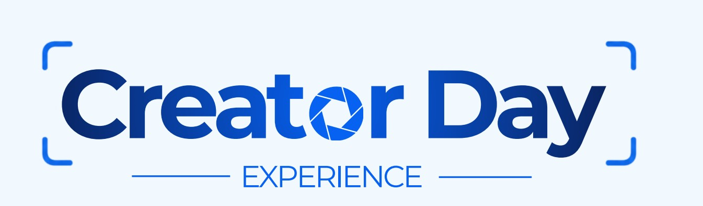
Um dia para sair da rotina, viver novas experiências e criar ao lado de outras creators.
Uma experiência presencial criada para quem vive de conteúdo e acredita que criar também é experimentar, trocar e se conectar.
17 de outubro de 2026 · 14h · Piatã, Salvador/BA
Quero viver essa experiência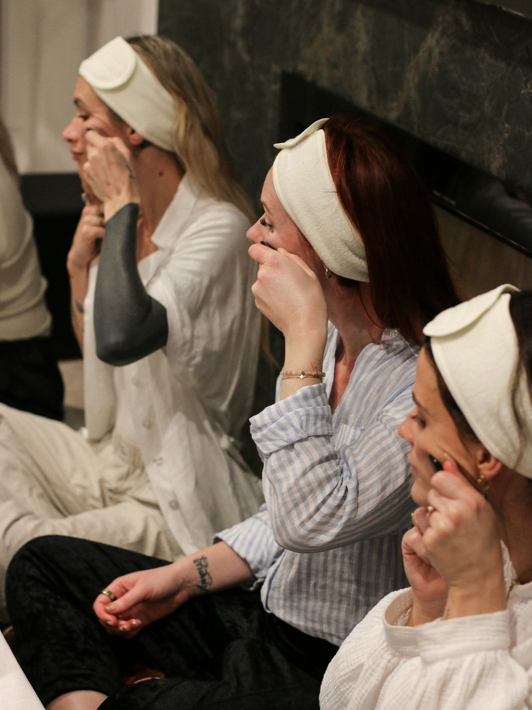
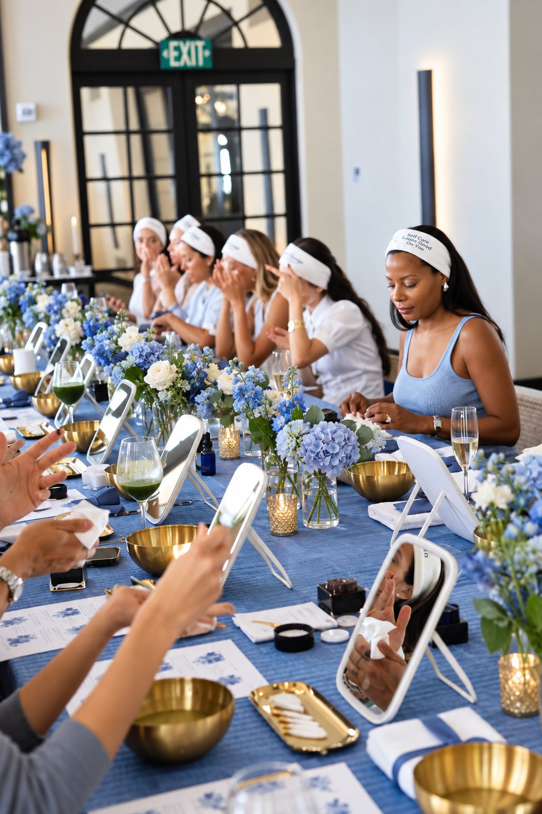
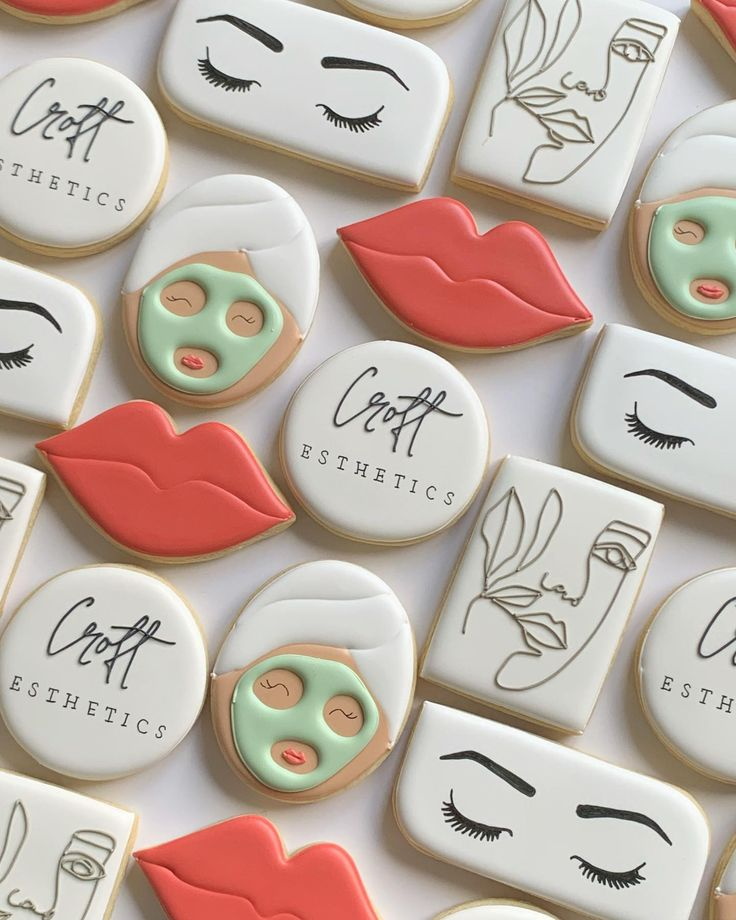
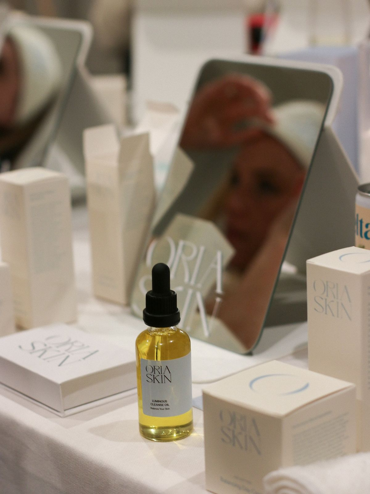
Não é só mais um evento
Nesta edição, vamos mergulhar no universo de skincare e cuidados com a pele, reunindo creators em um ambiente pensado para conhecer, experimentar, criar e se conectar.
Aqui você não vem apenas para assistir. Você vem para viver.
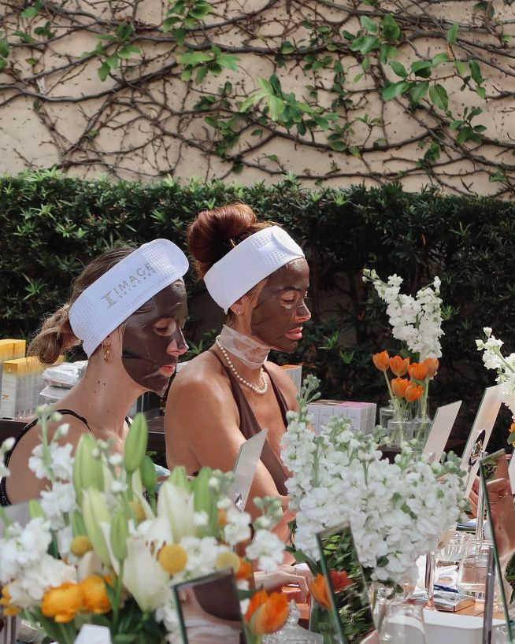
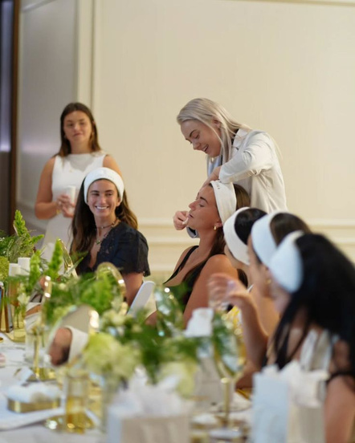
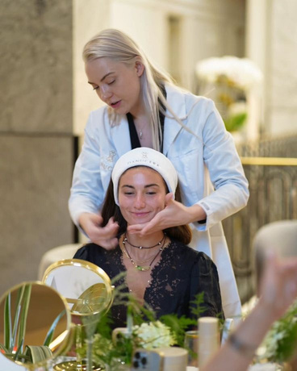
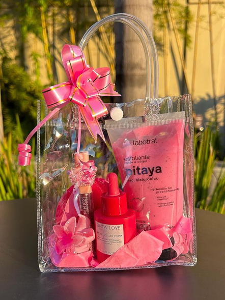
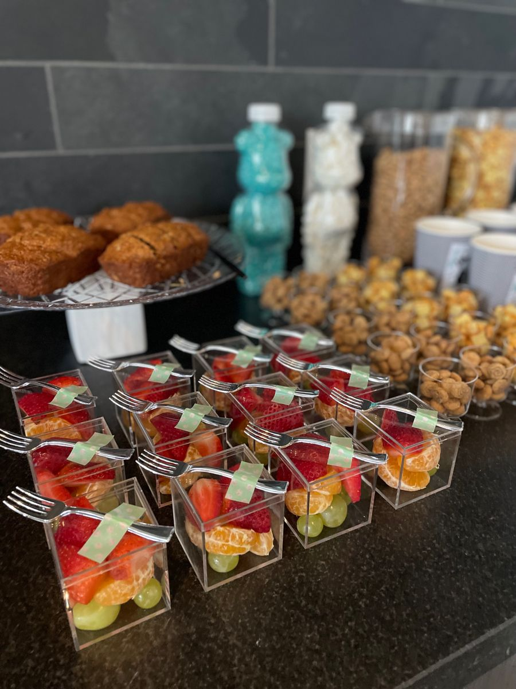
Creator Day Experience
Seu ingresso garante acesso ao Creator Day Experience.
Garantir meu ingressoVeja como foi
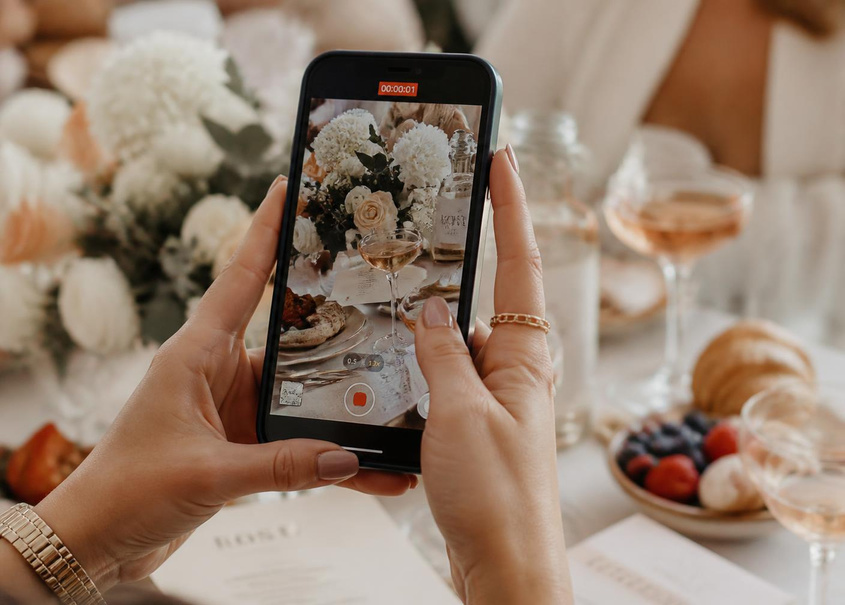
O Creator Day foi criado para creators que querem viver o mercado para além da tela. Novas experiências. Novas conexões. Novas referências. E muitos conteúdos para criar.
Nos vemos no Creator Day.
Quero garantir minha vaga